В AppSec.Hub существуют четыре роли пользователей.
Администратор (Administrator) определяет системные настройки на организационном уровне: пользователи, команды, рабочие пространства (workspaces), инструменты, тегирование, LDAP (Lightweight Directory Access Protocol), корреляция уязвимостей приложения, Quality Gates, нотификации по электронной почте, управление лицензией системы. Администратор не имеет доступа к работе с приложениями и их настройками, а также к работе с дефектами.
Менеджер (Manager) работает с одним или несколькими приложениями. Менеджер может добавлять/удалять кодовые базы, артефакты, экземпляры приложений, выполнять настройку приложений, устанавливать критерии качества с помощью QG. Менеджер не имеет доступа к настройкам организации. Он также не может работать с дефектами и уязвимостями.
Инженер по информационной безопасности (Инженер ИБ, Security Engineer) работает с техническим долгом, анализирует уязвимости, определяет взаимосвязь между проблемами безопасности и управляет дефектами. Инженер ИБ не имеет доступа к настройкам организации и настройкам приложения.
Разработчик (Developer) имеет доступ к информации в AppSec.Hub с правами только на чтение. Он может получать информацию, но не имеет прав на внесение каких-либо изменений. Исключением является возможность редактирования отдельных данных в профиле пользователя.
Возможно совмещение всех четырех ролей у одного пользователя.
В системе предусмотрено два типа пользователей с разным типом аутентификации:
Локальные пользователи AppSec.Hub.
LDAP (Lightweight Directory Access Protocol) пользователи. Управление LDAP пользователями производится в основном с помощью внешних программных инструментов сторонних производителей. LDAP пользователи просто импортируются в систему. Механизм LDAP реализован в ряде программных продуктов, таких как OpenLDAP, Microsoft Active Directory и др.
Настройка профиля пользователя
Нажмите на значок пользователя в правом верхнем углу, и после этого выберите элемент меню User profile из выпадающего меню, чтобы получить доступ к настройкам профиля пользователя.
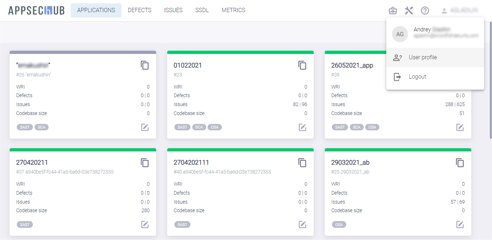
Прокрутите страницу профиля пользователя вниз, чтобы получить информацию о его роли в системе, доступе к рабочим пространствам (workspaces) и приложениям, а также членству в различных командах в AppSec.Hub.
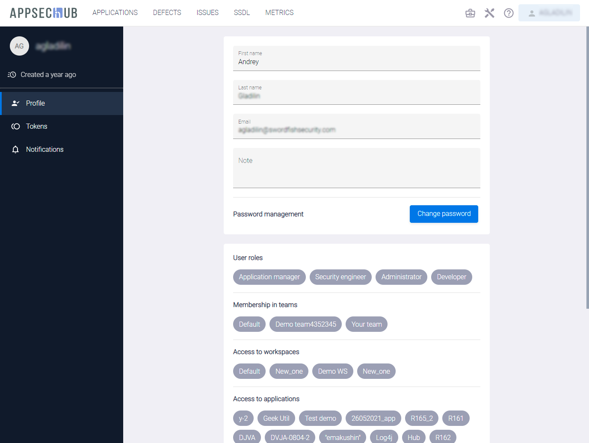
На этой странице также можно изменить пароль пользователя и адрес электронной почты, используя кнопку Change password справа. Данная функциональность доступна только для локальных учетных записей.
Выберите пункт Tokens в меню слева, чтобы просмотреть список токенов пользователя. Он может быть пустым.
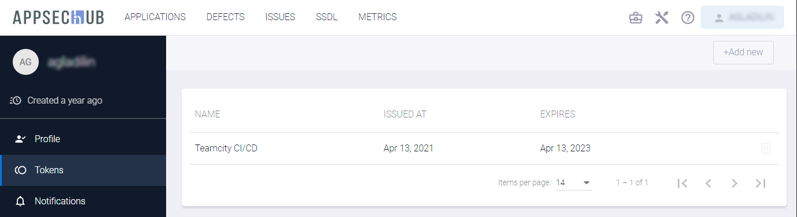
Выберите пункт Notifications в меню слева, чтобы установить настройки получения оповещений от системы о событиях на указанный в профиле пользователя адрес электронной почты. У каждого из событий можно переключить селектор в положение «включено», чтобы получать нотификацию о событиях этого типа.
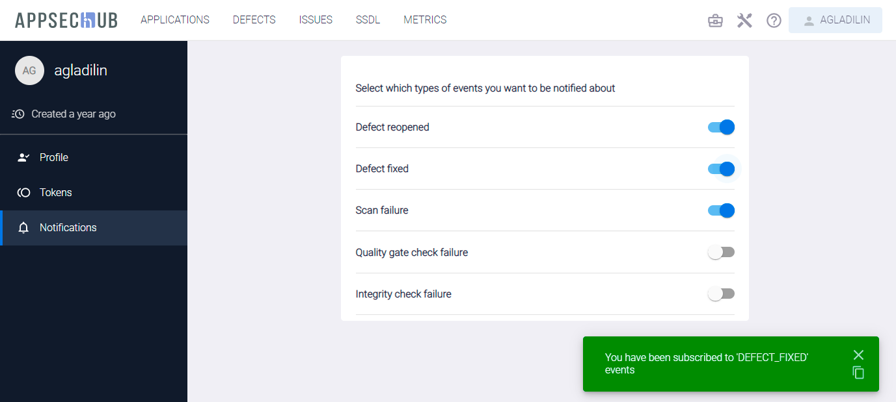
Администрирование пользователей и команд
Примечание
Для выполнения нижеописанных действий требуется роль Администратора.
Нажмите на иконку администрирования в правом верхнем углу экрана. На экране появится страница администрирования.
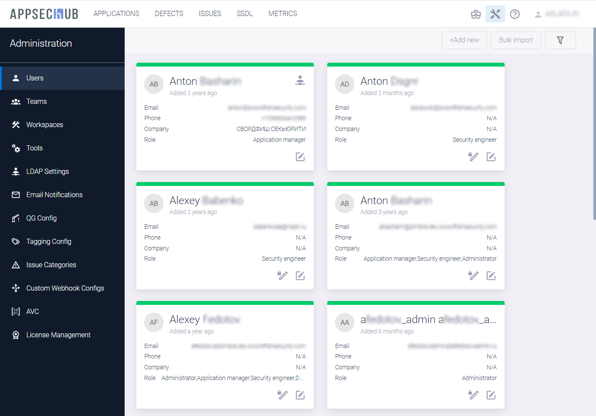
Используйте пункты меню слева для выполнения следующих настроек:
Users — создание новых пользователей. Назначение пользователям ролей в системе.
Teams — создание новых команд и добавление/удаление пользователей в команды. Новый пользователь автоматически добавляется в команду Default team.
LDAP Settings — конфигурирование LDAP.
Нажмите иконку редактирования в правом нижнем углу карточки пользователя, чтобы изменить настройки. Используя выпадающее меню в окне Edit user data, выберите необходимые роли.
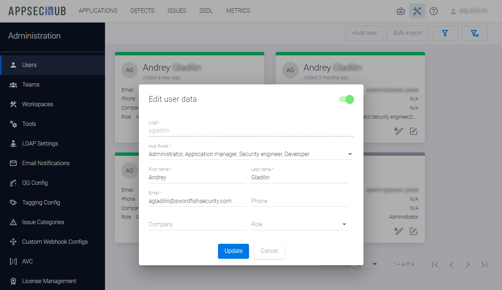
Нажмите кнопку Update внизу окна, чтобы сохранить изменения.
Добавление пользователя
Выберите пункт меню Users в консоли слева и нажмите кнопку +Add new, чтобы добавить нового пользователя. Новый пользователь будет автоматически по умолчанию добавлен в команду Default team (В AppSec.Hub всегда существует предустановленная команда Default team). До момента создания других команд в системе все пользователи входят и могут быть добавлены только в эту команду.
На экране появится окно Add user.
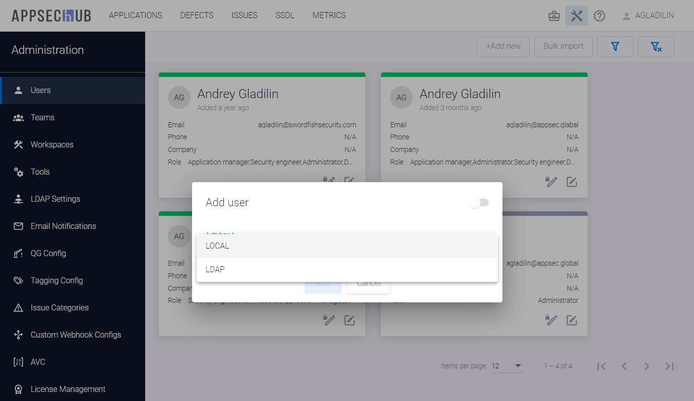
В этом окне определите, является ли пользователь локальным или LDAP-пользователем (внешним), используя выпадающее меню в поле Auth type. Заполните остальные поля окна информацией о пользователе. Поле Hub Roles предоставляет выпадающий список с ролями пользователей системы (Administrator, Manager, Security Engineer, Developer).
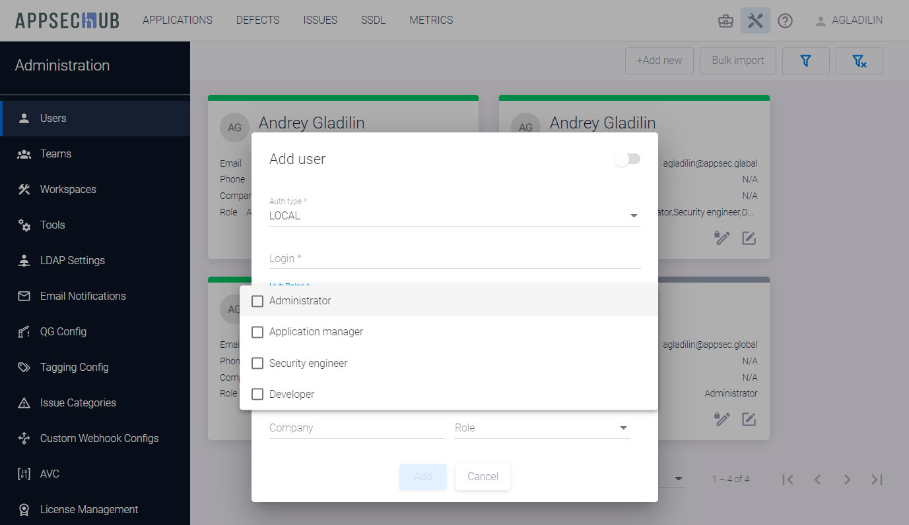
Нажмите кнопку Add, чтобы создать нового пользователя. Уведомление о создании нового пользователя появится в правом нижнем углу экрана, а на странице Users появится карточка вновь созданного пользователя. При этом на указанную электронную почту будет направлено уведомление с приглашением присоединиться к работе в системе.
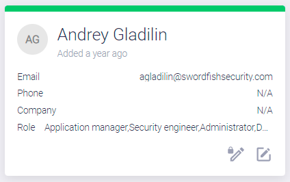
Нажмите на кнопку редактирования Edit user в правом нижнем углу карточки пользователя, чтобы изменить настройки.
Нажмите на иконку Change user password в правом нижнем углу карточки пользователя, чтобы изменить пароль пользователя.
Поиск пользователя
Предусмотрена возможность поиска существующих пользователей системы с использованием кнопки Show filters, расположенной в правом верхнем углу. Чтобы найти пользователя или пользователей, нажмите эту кнопку и введите один из параметров для поиска пользователей в поле by login, first/last name, email.
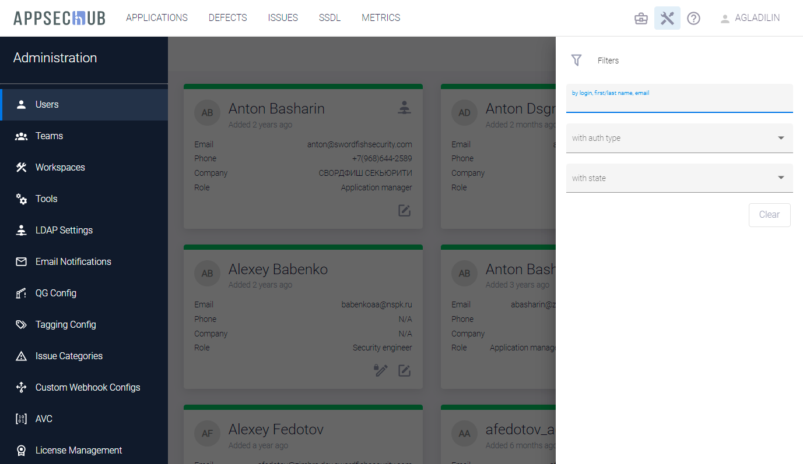
Список пользователей, соответствующих заданному критерию поиска, появится на экране.
Также существует возможность отфильтровать существующих пользователей, используя выпадающие меню with auth type и with state. Выберите пункты Local users, LDAP users или All auth types в меню with auth type. На экране появится список пользователей с соответствующим типом аутентификации. Выберите пункты Active users, Non active users или All states в меню with state. На экране появится список пользователей с соответствующим состоянием.
Настройки фильтра сохраняются в системе между сессиями пользователя. Нажмите кнопку Reset filters 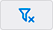 в правом верхнем углу, чтобы сбросить все установленные фильтры.
Пользователи и настройки LDAP
Конфигурация LDAP сервиса
LDAP пользователи могут быть добавлены в AppSec.Hub только после конфигурации настроек LDAP. Выберите пункт меню LDAP Settings в консоли слева.
Полностью настроенная страница параметров LDAP содержит настройки, определенные на всех четырех вкладках. Если LDAP настраивается с нуля, начинать настройку следует с вкладки LDAP Service. Вкладки User schema mapping, Role model mapping и Group mapping в этом случае пусты и будут заполнены позже.
Вкладка LDAP Service содержит несколько полей, которые определяют конфигурацию LDAP.
Поле Service URL содержит URL адрес сервера LDAP (можно использовать как IP адрес, так и имя домена). AppSec.Hub позволяет подключаться только к одному внешнему серверу LDAP. При необходимости можно изменить сервер LDAP на другой, однако для этого сначала следует удалить старую конфигурацию LDAP. На рисунке выше LDAP сконфигурирован для LDAP-сервера Microsoft Active Directory.
Имя поля Base DN (Distinguished Name) является термином LDAP. DN — это атрибут LDAP, который однозначно определяет объект. У каждого DN должны быть уникальные имя и расположение, отличающиеся от всех других объектов в Active Directory. DN предоставляет способ выбора любого объекта в Active Directory. После того, как объект выбран, его атрибуты можно изменить. Base DN является корневым элементом дерева объектов.
Поле Admin DN определяет доступ администратора LDAP и/или другого пользователя LDAP к дереву объектов. Этот доступ необходим для чтения параметров, сопоставления схемы пользователя и сопоставления ролевой модели.
Поле Admin Password используется для установки пароля администратора LDAP. Введите новый пароль и нажмите кнопку Update внизу, чтобы установить новый пароль.
Включите переключатель LDAP integration в правом верхнем углу вкладки LDAP Service, чтобы активировать работу с LDAP в AppSec.Hub.
После того как параметры конфигурации LDAP заданы, нажмите кнопку проверки соединения Test connection в нижней части вкладки LDAP Service. Подтверждение результата подключения отобразится в правом нижнем углу экрана.
Селектор включения автоматического импорта для новых пользователей Auto import new users на вкладке LDAP Service может быть включен только после завершения сопоставления схемы пользователя и сопоставления ролевой модели. Подробности приведены в разделах «Сопоставление схемы пользователя» и «Сопоставление ролевой модели» ниже.
Сопоставление схемы пользователя
Сопоставление схемы пользователя выполняется на вкладке User schema mapping на странице LDAP настроек LDAP Settings.
Сначала необходимо определить связанные с пользователями классы LDAP в поле User-related LDAP classes.
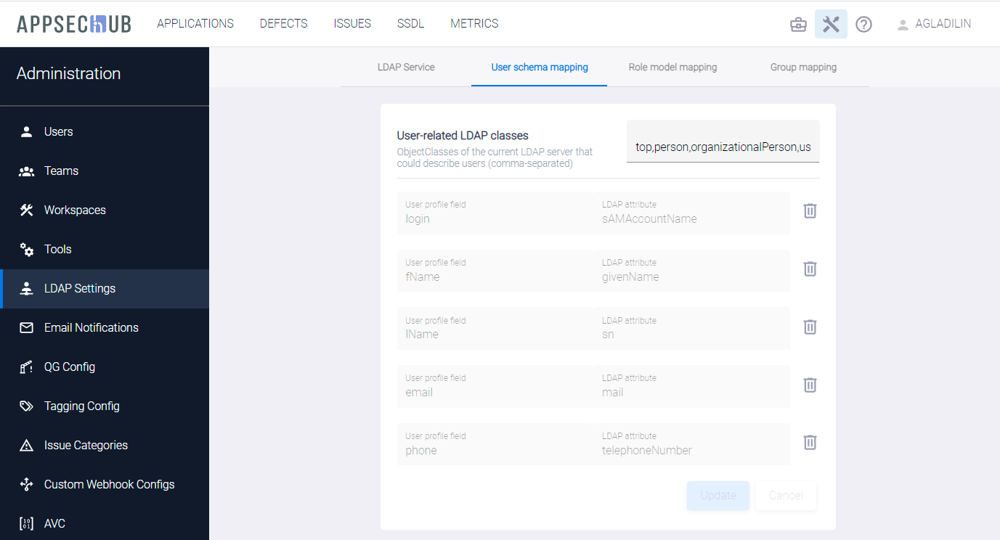
После того, как связанные с пользователями классы LDAP были определены, необходимо попарно сопоставить друг с другом поля AppSec.Hub и атрибуты LDAP (взятые, например, из карты Microsoft AD). Чтобы сопоставить такую пару, кликните поле User profile field в нижней части вкладки и выберите поле AppSec.Hub из выпадающего списка. Затем кликните поле LDAP attribute и выберите атрибут из выпадающего списка.
Чтобы добавить дополнительную пару параметров, нажмите кнопку Add row справа внизу вкладки. Нажмите кнопку Update внизу, чтобы сохранить сделанные изменения.
Список попарно сопоставленных элементов может выглядеть как это показано на рисунке ниже.
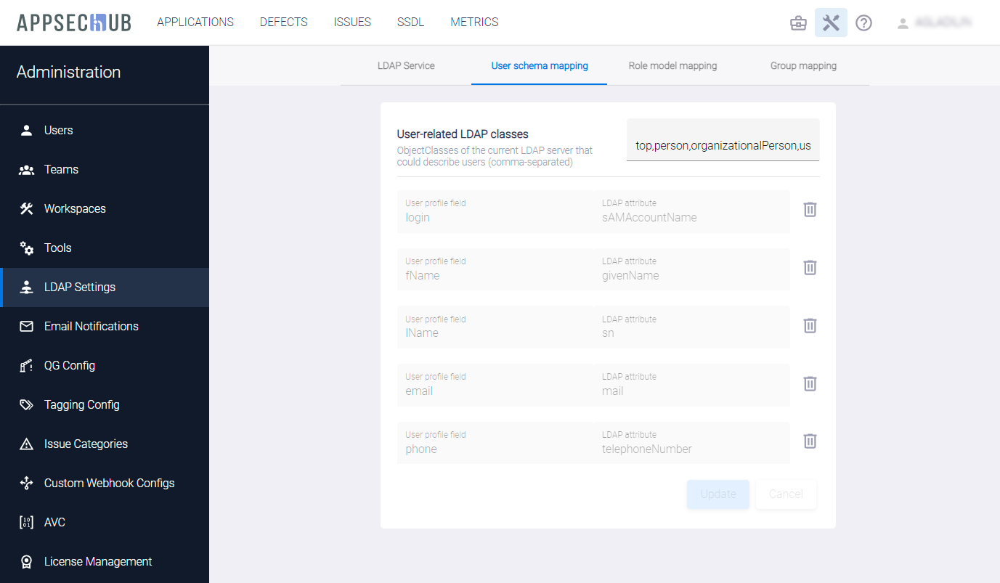
На этой вкладке обязательно должны быть соотнесены с атрибутами LDAP следующие поля AppSec.Hub:
login;
email.
Сопоставление других полей системы не является обязательным.
Добавление LDAP пользователя
После того как сопоставление схемы пользователя завершено, можно добавить нового LDAP пользователя в систему, введя логин LDAP пользователя в поле Find by login или адрес электронной почты LDAP пользователя в поле Find by email в окне Add user. Выберите LDAP из выпадающего списка в поле Auth type, выберите значение Find by login или Find by email, и введите логин или адрес электронной почты LDAP пользователя.
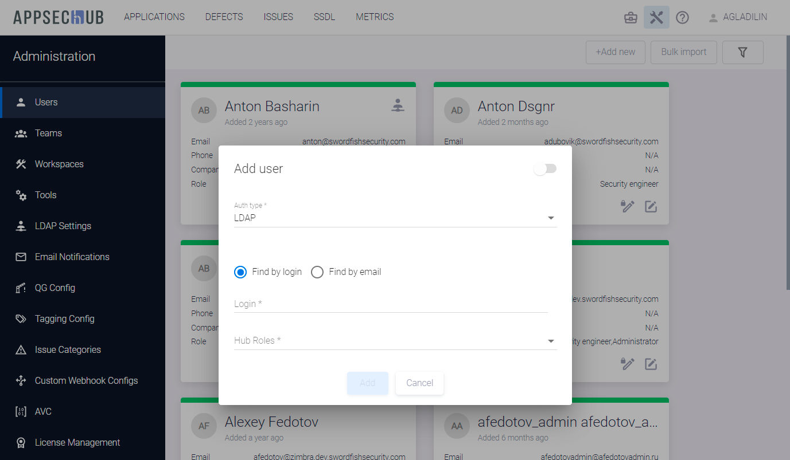
Выберите роль пользователя в AppSec.Hub для LDAP пользователя из выпадающего списка в поле Hub Roles. Нажмите кнопку Add внизу, чтобы добавить нового LDAP пользователя в систему. Новый LDAP пользователь автоматически будет добавлен в команду Default team.
Кроме этого, предусмотрена возможность пакетного импорта пользователей. Нажмите кнопку Bulk import в правом вернем углу и подтвердите действие в появившемся диалоговом окне.
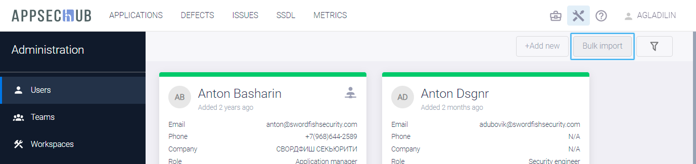
Выберите пункт меню Users в консоли слева и отфильтруйте существующих пользователей с помощью кнопки Show filters в правом верхнем углу. Выберите пункт LDAP users в выпадающем меню with auth type.
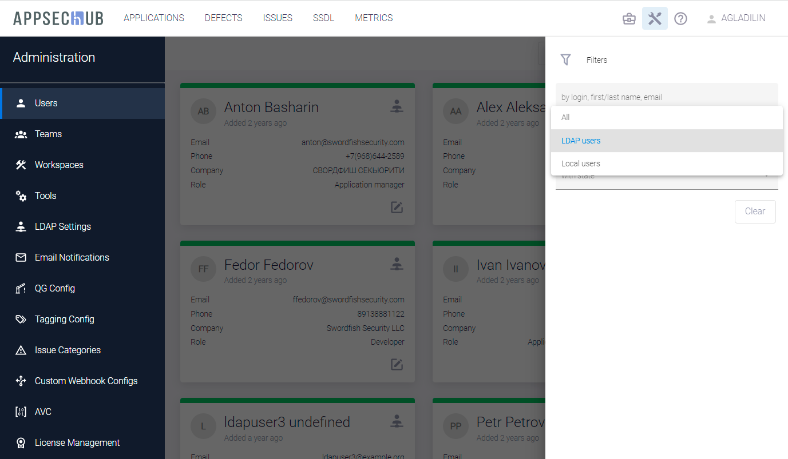
На экране появится список LDAP пользователей.
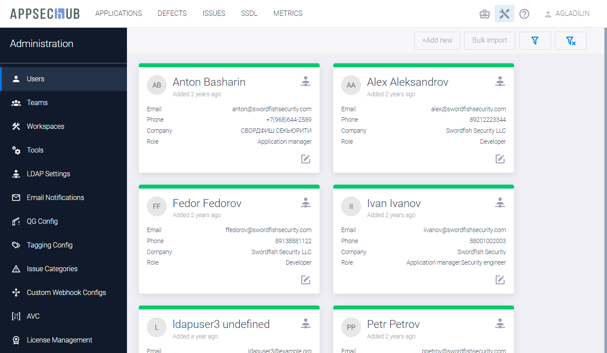
В отличии от других LDAP пользователи имеют значок в правом верхнем углу карточки пользователя.
Сопоставление ролевой модели
Сопоставление ролевой модели определяет соответствие между ролями и группами LDAP и ролями пользователей в AppSec.Hub. Если в AppSec.Hub произведено сопоставление ролевой модели, роли пользователей в системе назначаются LDAP пользователям автоматически.
Сопоставление ролевой модели выполняется на вкладке Role model mapping на странице LDAP Settings.
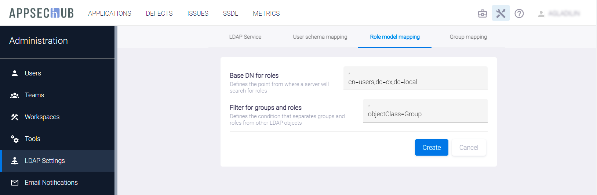
Поле Base DN for roles определяет Base DN в терминах LDAP. Введите фильтр в поле Filter for groups and roles и нажмите кнопку Create в нижней части вкладки. Сообщение, подтверждающее обновление сопоставления ролевой модели, появится в правом нижнем углу экрана.
На вкладке Role model mapping теперь доступны новые поля Hub role и LDAP group. Чтобы сопоставить роли пользователей в AppSec.Hub и LDAP группы, кликните поле Hub role и выберите роль пользователя в системе из выпадающего списка, кликните поле LDAP group и выберите группу LDAP из выпадающего списка, а затем нажмите справа кнопку .
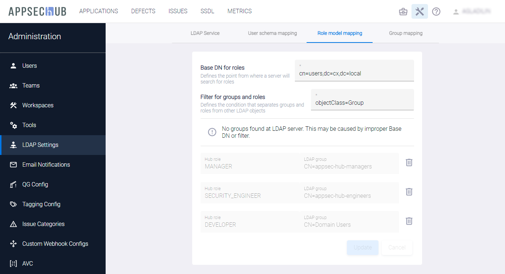
Список сопоставленных элементов может выглядеть как показано на рисунке выше. В этом случае все пользователи домена LDAP получают роль Developer в AppSec.Hub.
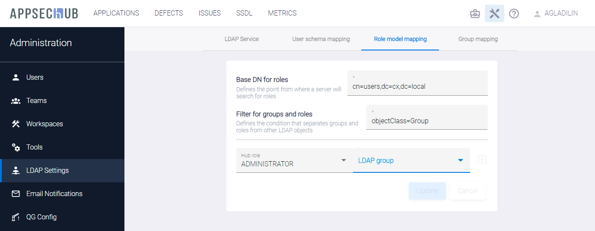
Нажмите кнопку Update на вкладке справа внизу, чтобы сохранить изменения в сопоставлении ролевых моделей.
Сопоставление групп
Сопоставление групп определяет соответствие между группами LDAP и командами в AppSec.Hub. Если в системе произведено сопоставление групп, команды в AppSec.Hub назначаются LDAP пользователям автоматически.
Сопоставление групп выполняется на вкладке Group mapping на странице LDAP Settings.
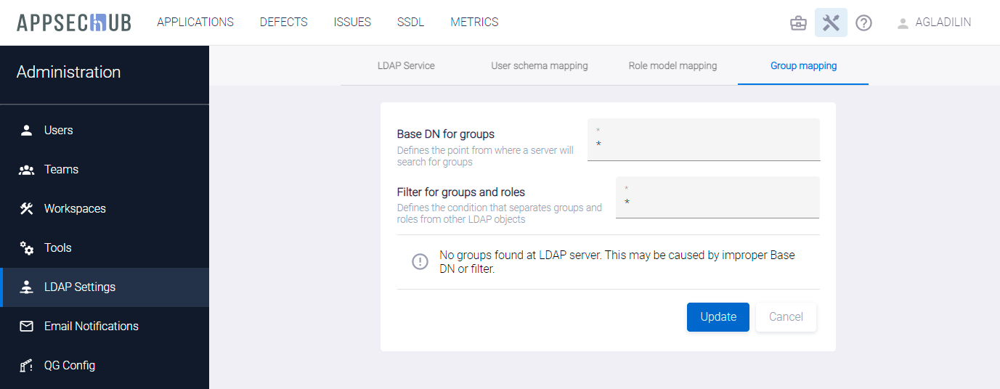
Поле Base DN for groups определяет Base DN в терминах LDAP. Введите фильтр в поле Filter for groups and roles и нажмите кнопку Create в нижней части вкладки.
На вкладке Group mapping теперь доступны новые поля Hub team и LDAP group. Чтобы сопоставить команды в AppSec.Hub и LDAP группы, кликните поле Hub team и выберите команду в системе из выпадающего списка, кликните поле LDAP group и выберите группу LDAP из выпадающего списка, а затем нажмите справа кнопку .
Список сопоставленных элементов может выглядеть как показано на рисунке ниже.
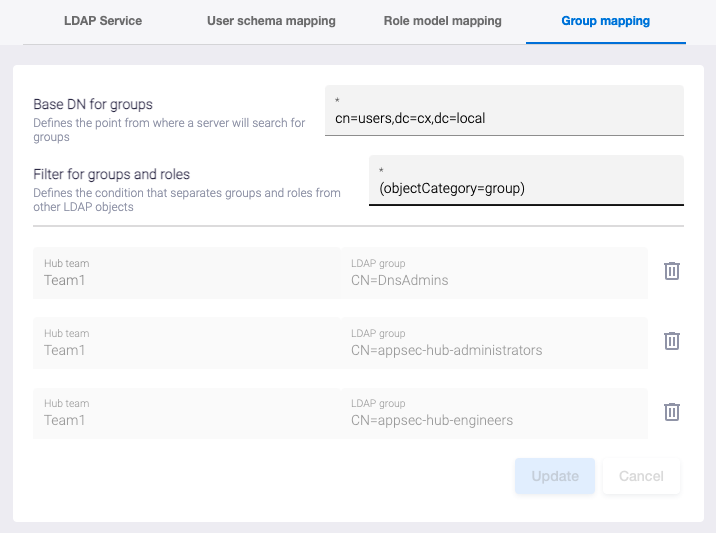
Нажмите кнопку Update на вкладке справа внизу, чтобы сохранить изменения в сопоставлении групп.
Автоматический импорт новых LDAP пользователей
После того как сопоставление ролевых моделей настроено, можно автоматически импортировать новых LDAP пользователей в AppSec.Hub. Включите селектор Auto import new users на вкладке LDAP Service.
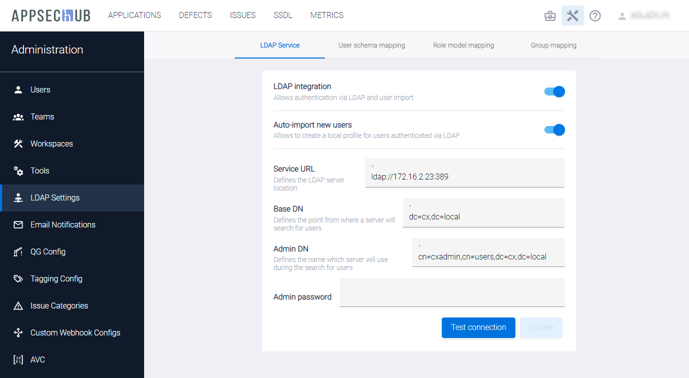
Если селектор Auto import new users включен, новые LDAP пользователи будут автоматически добавляться в AppSec.Hub. В этом случае пользователю системы с правами Администратора больше не нужно добавлять каждого нового LDAP пользователя с помощью кнопки +Add new на странице Users. Каждый LDAP пользователь с подходящей доменной ролью в Active Directory сможет войти в AppSec.Hub, используя свою учетную запись в домене на странице входа AppSec.Hub.
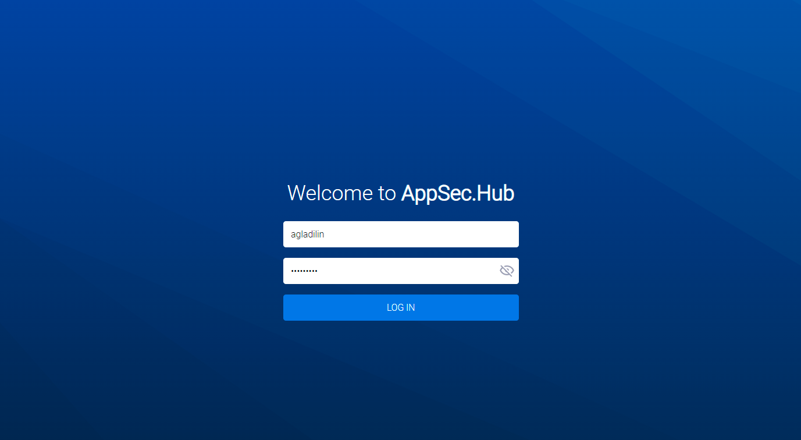
LDAP пользователь получает роль пользователя в системе, в соответствии с тем, как она определена в сопоставлении ролевых моделей. AppSec.Hub автоматически добавляет этого нового LDAP пользователя в список существующих пользователей и в команду Default team, а также заполняет профиль пользователя.
Создание команды
Для создания новой команды или для добавления пользователей в существующую команду используйте пункт меню Teams в консоли слева. Нажмите на кнопку +Add new, чтобы добавить новую команду.
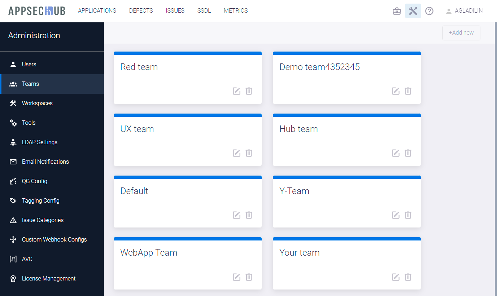
На экране появится окно Create new team.
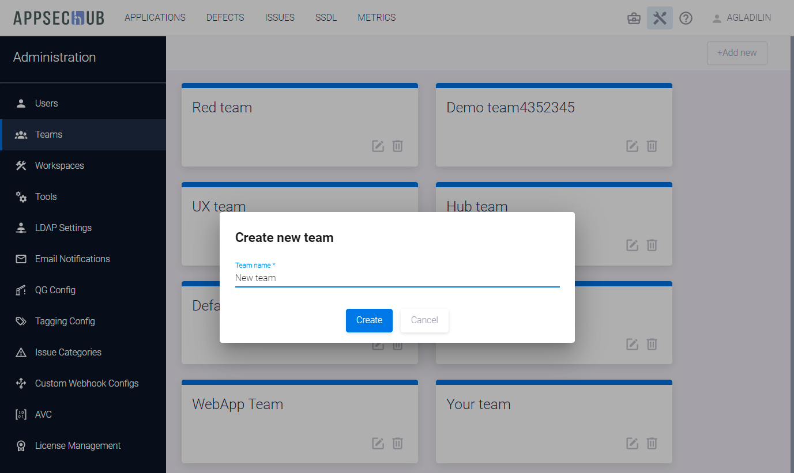
Введите имя новой команды и нажмите кнопку Create. На экране появятся карточка новой команды и соответствующее уведомление в правом нижнем углу экрана.
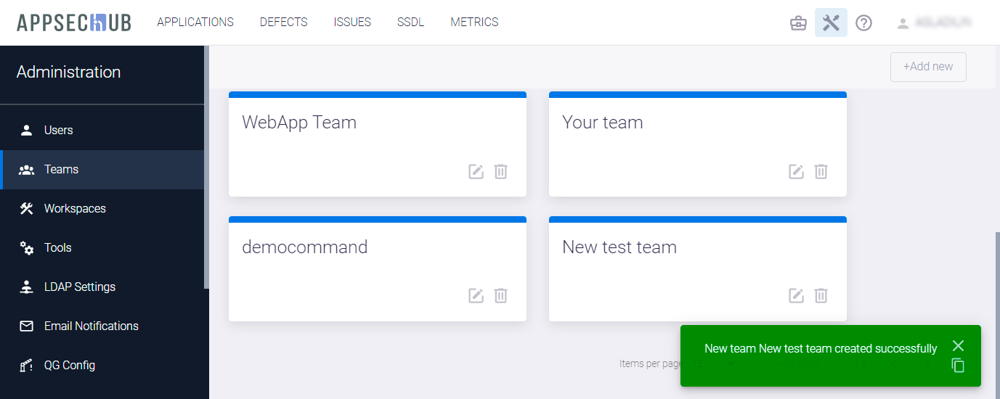
Нажмите кнопку редактирования на карточке команды. В появившейся странице с информацией о команде нажмите кнопку Actions 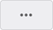. Чтобы добавить пользователя или пользователей в команду, в раскрывающемся меню выберите пункт Add user.
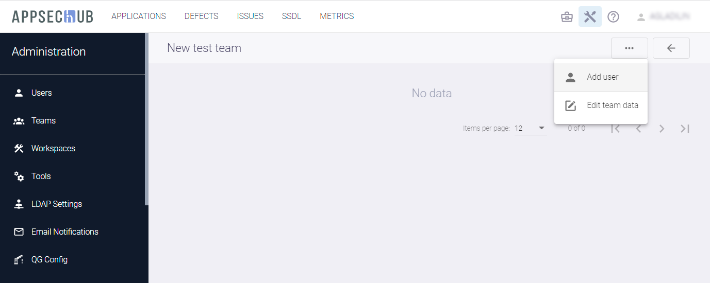
На экране появится окно Find and add member to the team. Дважды нажмите на имя пользователя из списка существующих пользователей, чтобы добавить этого пользователя в команду.
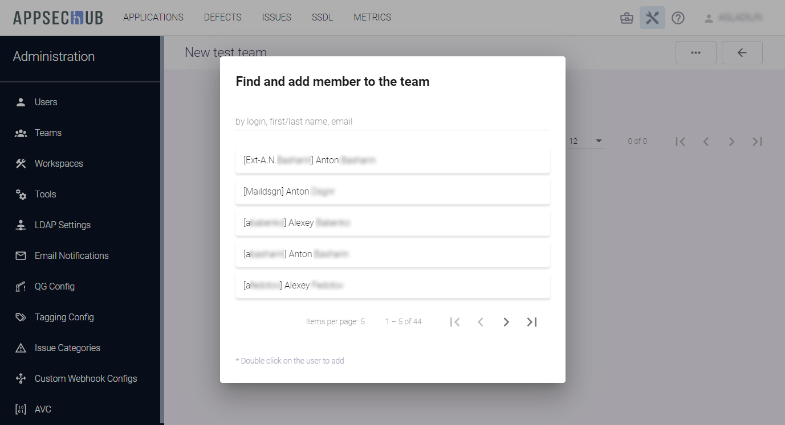
Подтверждение о добавлении пользователей в команду появится в правом нижнем углу экрана.
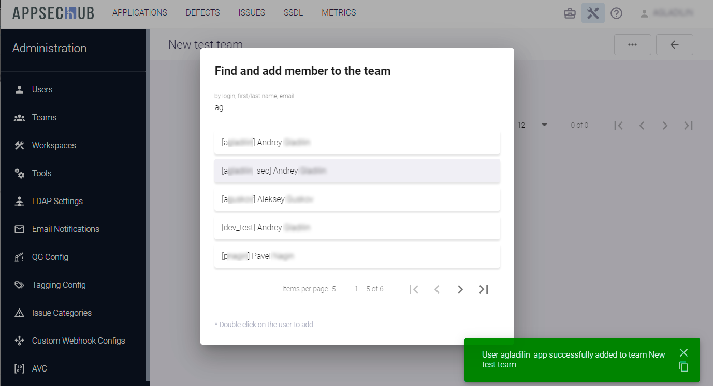
Чтобы удалить пользователя из команды, нажмите на значок Delete user from team в правом нижнем углу карточки пользователя.
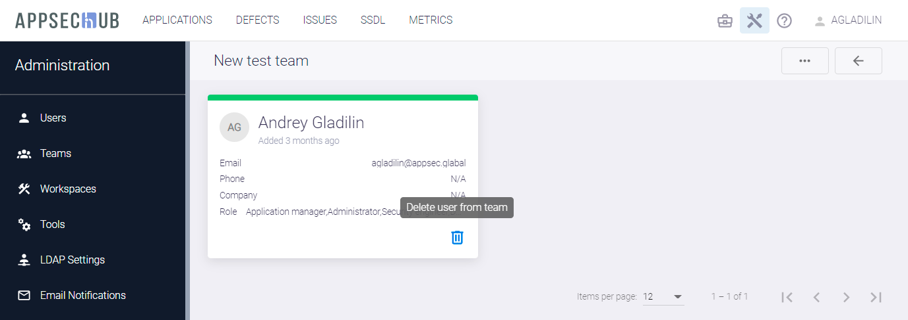
Изменение наименования команды
Нажмите кнопку редактирования на карточке команды. В появившейся странице с информацией о команде нажмите кнопку Actions . Чтобы переименовать команду, выберите пункт Edit team data в раскрывающемся меню.
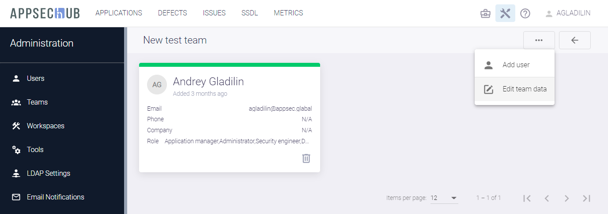
В появившемся диалоговом окне введите новое наименование команды (Team name).
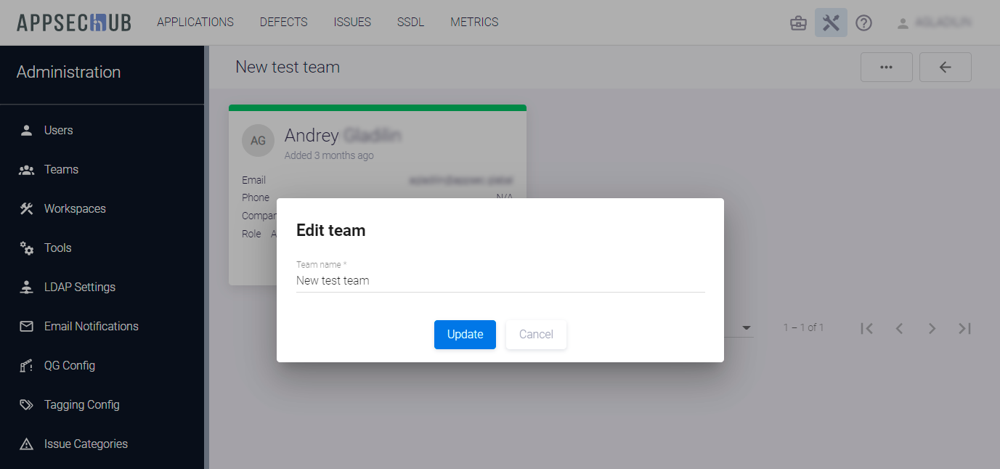
Нажмите кнопку Update, чтобы сохранить изменения.
Настройки организации и доступ команд
Чтобы настроить параметры организации, нажмите иконку профиля организации в правом верхнем углу.
На открывшейся странице используйте пункты меню в консоли слева, чтобы определить следующие настройки:
Пункт меню Profile: профиль организации, включая название компании, URL сайта компании, адрес службы поддержки и краткое описание компании. Заметим, что информация, указанная в полях Signature of support team и Email of support team, отображается при завершении скриптов, которые используются для автоматической интеграции AppSec.Hub в единый цикл разработки программного обеспечения. Более подробная информация об автоматической интеграции приведена в разделе «On-boarding — автоматизация интеграции AppSec.Hub в цикл разработки» Руководства пользователя, а примеры завершающих сообщений в CLI можно посмотреть в «Приложении 3. Результаты сканирования» Руководства пользователя.
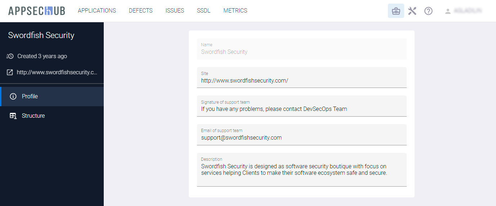
Пункт меню Structure: организационная структура — департаменты, центры экспертизы (centers of excellence), команды. В один отдел может входить несколько команд и наоборот. Структура организации может быть определена не полностью. Структура организации используется для разделения доступа команд AppSec.Hub к инструментам и приложениям. Приложения и инструменты (а значит, и лицензии на эти инструменты) в AppSec.Hub привязаны к командам и, следовательно, и к структуре организации. Подробности приведены в разделе «Настройки приложения» Руководства пользователя.
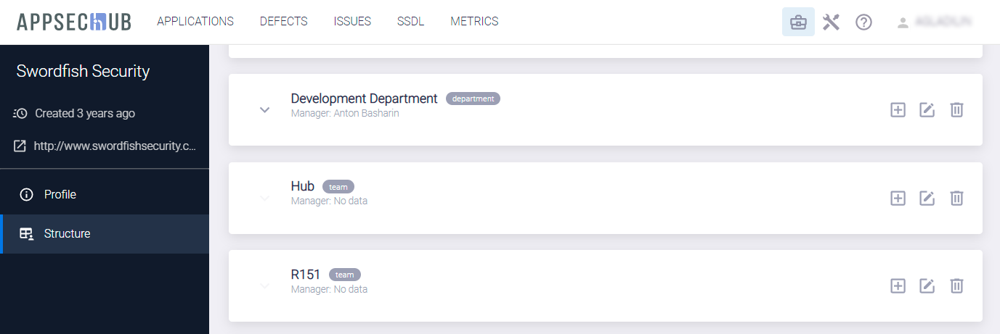
Нажмите кнопку +Add root в правом верхнем углу, чтобы создать новое подразделение в структуре организации. На экране откроется окно Create Org Structure.
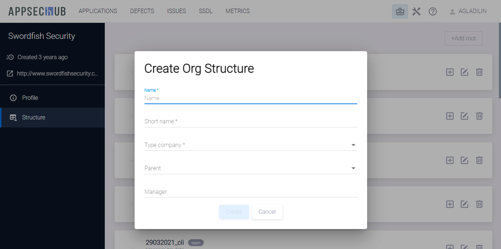
В этом окне укажите имя нового подразделения в структуре организации в поле Name и краткое имя подразделения в поле Short name. В выпадающем меню Type company выберите тип компании (Empty, Department, COE — Center of Excellence, Team). В выпадающем меню Parent выберите родительское подразделение из списка существующих подразделений. Это поле можно оставить пустым. Укажите имя менеджера в поле Manager и нажмите кнопку Create. Новое структурное подразделение организации появится в структуре организации.
Для создания дочерних подразделений, редактирования или удаления информации о подразделении используется блок кнопок, расположенный справа от его наименования.
 в правом верхнем углу экрана. На экране появится страница администрирования.
в правом верхнем углу экрана. На экране появится страница администрирования. в правом нижнем углу карточки пользователя, чтобы изменить настройки. Используя выпадающее меню в окне Edit user data, выберите необходимые роли.
в правом нижнем углу карточки пользователя, чтобы изменить настройки. Используя выпадающее меню в окне Edit user data, выберите необходимые роли. , расположенной в правом верхнем углу. Чтобы найти пользователя или пользователей, нажмите эту кнопку и введите один из параметров для поиска пользователей в поле by login, first/last name, email.
, расположенной в правом верхнем углу. Чтобы найти пользователя или пользователей, нажмите эту кнопку и введите один из параметров для поиска пользователей в поле by login, first/last name, email.